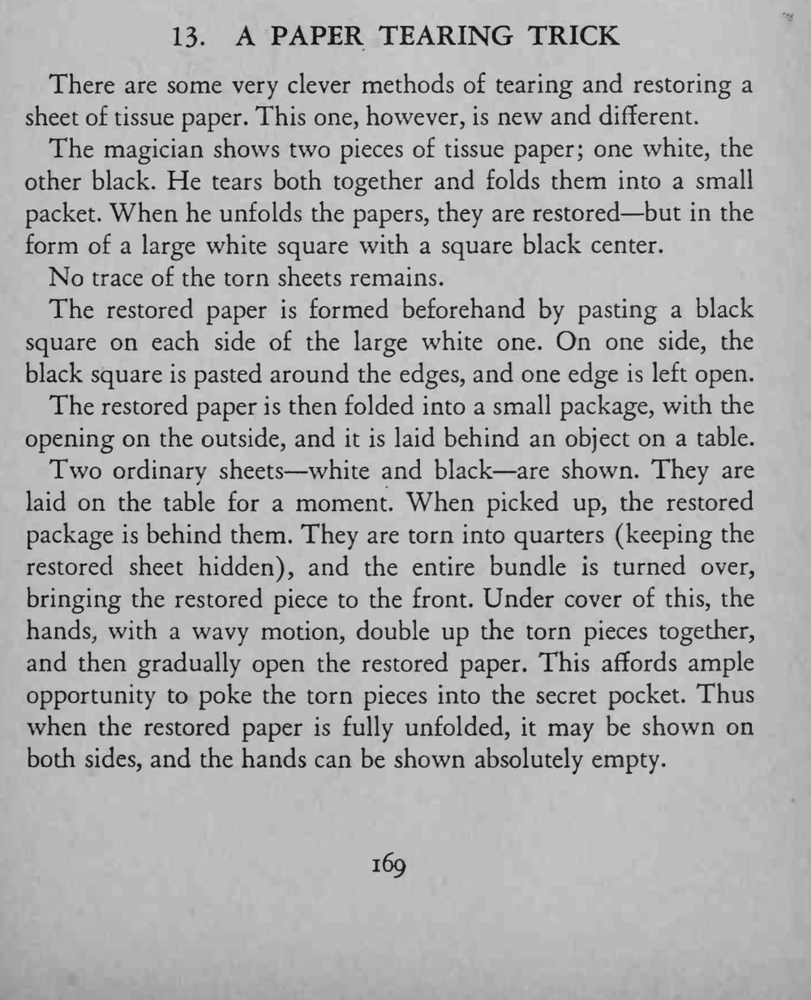

黑白两张薄纸一起撕碎，展开后却是一张白纸、中间一块黑方，撕痕全无。
折包开口要朝外、塞碎纸要趁展开时，节奏不能乱。

There are some very clever methods of tearing and restoring a sheet of tissue paper. This one, however, is new and different. The magician shows two pieces of tissue paper; one white, the other black. He tears both together and folds them into a small packet. When he unfolds the papers, they are restored but in the form of a large white square with a square black center. No trace of the torn sheets remains. The restored paper is formed beforehand by pasting a black square on each side of the large white one. On one side, the black square is pasted around the edges, and one edge is left open. The restored paper is then folded into a small package, with the opening on the outside, and it is laid behind an object on a table. Two ordinary sheets white and black are shown. They are laid on the table for a moment. When picked up, the restored package is behind them. They are torn into quarters (keeping the restored sheet hidden), and the entire bundle is turned over, bringing the restored piece to the front. Under cover of this, the hands, with a wavy motion, double up the torn pieces together, and then gradually open the restored paper. This affords ample opportunity to poke the torn pieces into the secret pocket. Thus when the restored paper is fully unfolded, it may be shown on both sides, and the hands can be shown absolutely empty.